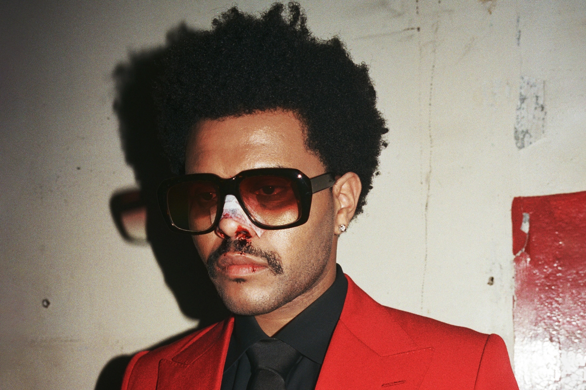

Abel Makkonen Tesfaye (born February 16, 1990), known professionally as the Weeknd, is a Canadian singer-songwriter and record producer.
In August 2009, Tesfaye began anonymously releasing music on YouTube. The following year, he met Jeremy Rose, a producer who had an idea for a dark contemporary R&B project. After initially trying to pitch the idea to musician Curtis Santiago, Rose played one of his instrumentals for Tesfaye, who freestyle rapped over it. Rose produced three songs – "What You Need", "Loft Music" and "The Morning" – and others that Tesfaye had sung on, which were ultimately scrapped. Rose let Tesfaye keep the tracks he had produced under the condition that he would be credited for them. In December 2010, Tesfaye uploaded "What You Need", "Loft Music" and "The Morning" to YouTube under the username "xoxxxoooxo". His identity was initially unknown.